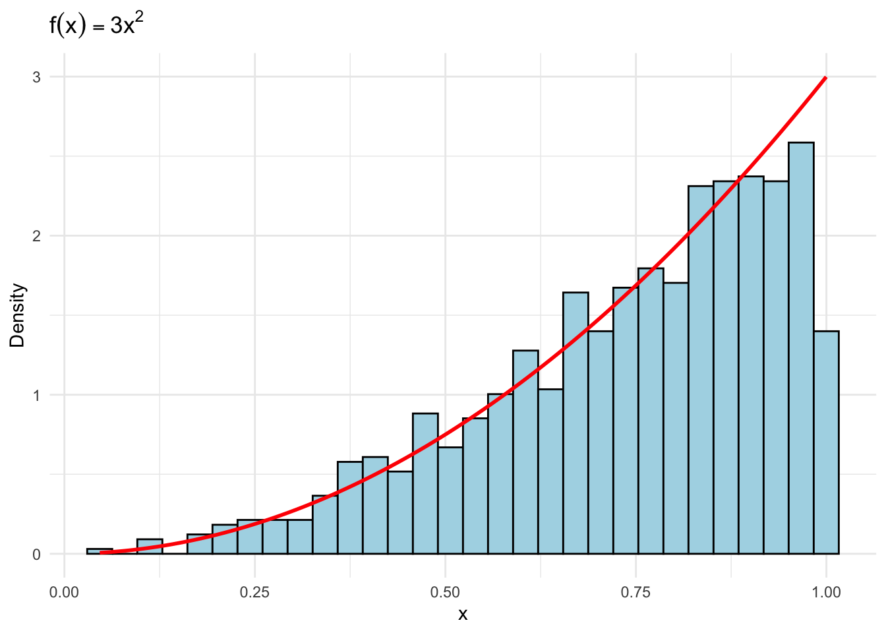
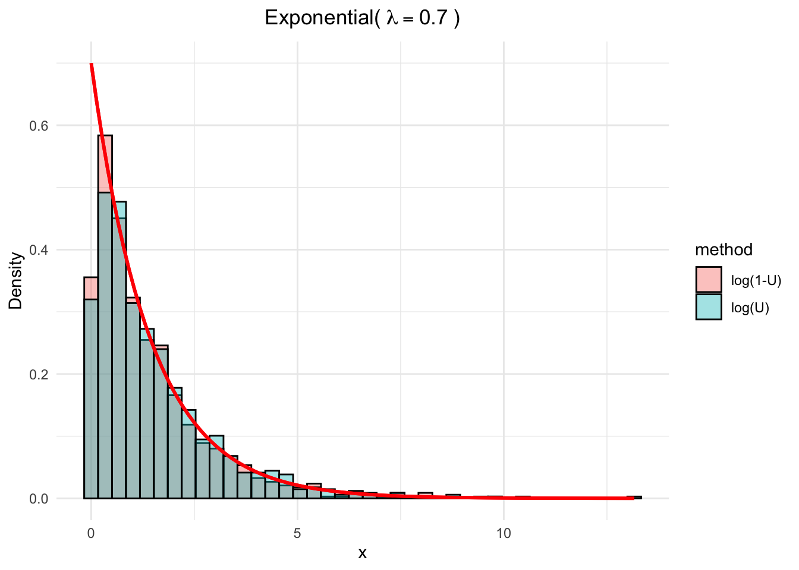
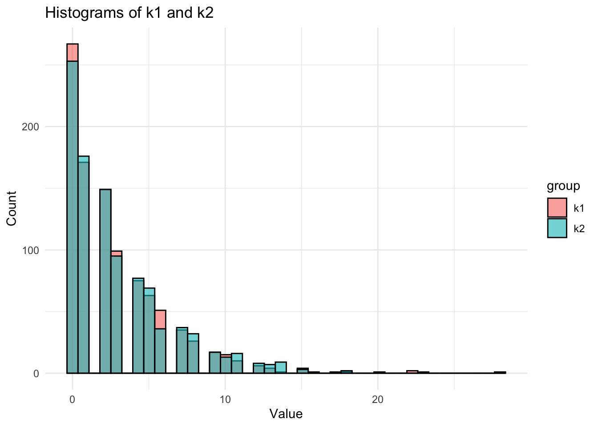

One of the fundamental tools required in computational statistics is the ability to simulate random variables (rvs) from specified probability distributions.
3.1 Overview
In the simplest case, to simulate drawing an observation at random from a finite population, a method of generating rvs from the discrete uniform distribution is required. Therefore, a suitable generator of uniform pseudo-random numbers is essential.
Methods for generating random variates from other probability distributions all depend on the uniform random number generator (RNG).
In the Appendices, we have seen that how to use the built-in R functions to generate RVs from some common distributions, such as runif(), rnorm(), rbinom(), etc. In this Section, we will go over some of the common methods to generate RVs from a costume distributions.
Example Theorem
If we already have a finite population of size \(N\) with values \(x_1, x_2, \ldots, x_N\) in hand, we can sample from this population with and without replacement.
set.seed(777)sample(c(0,1), size =10, replace =TRUE) # with replacement
[1] "H" "N" "J" "Y" "B" "U" "F" "P" "Z" "V" "W" "I" "L" "A" "G" "Q" "X" "D" "M"
[20] "R" "C" "T" "O" "K" "E" "S"
Table 3.1: Common probability distributions and their corresponding R functions for cumulative distribution function (CDF) and random number generation (borrowed from Table 3.1 in reference [2]).
Distribution
cdf
Generator
Parameters
beta
pbeta
rbeta
shape1, shape2
binomial
pbinom
rbinom
size, prob
chi-squared
pchisq
rchisq
df
exponential
pexp
rexp
rate
F
pf
rf
df1, df2
gamma
pgamma
rgamma
shape, rate or scale
geometric
pgeom
rgeom
prob
lognormal
plnorm
rlnorm
meanlog, sdlog
negative binomial
pnbinom
rnbinom
size, prob
normal
pnorm
rnorm
mean, sd
Poisson
ppois
rpois
lambda
Student’s t
pt
rt
df
uniform
punif
runif
min, max
3.2 Inverse Transformation Method
The first method to simulate rvs is the inverse transformation method (ITM).
If \(X\sim F_X\) is a continuous rv, then the rv \(U = F_X(x) \sim \operatorname{Unif}(0,1)\).
ITM of generating rvs applies the probability integral transformation. Define the inverse transformation \[ F^{−1}_X(u) = \inf\{x : F_X(x) = u\},\quad 0 < u < 1.\] Then, if \(U \sim \operatorname{Unif}(0,1)\), the rv \(X = F^{−1}_X(U)\) has the distribution \(F_X\). This can be shown as, for all \(x \in R\)\[\begin{align}
P\left(F_X^{-1}(U) \leq x\right) & =P\left(\inf \left\{t: F_X(t)=U\right\} \leq x\right) \\
& =P\left(U \leq F_X(x)\right) \\
& =F_U\left(F_X(x)\right)=F_X(x),
\end{align}\]
Hence, \(F_X^{-1}(U)\) and \(X\) have the same distribution. So, in order to generate rv \(X\), we can simulate \(U\sim \operatorname{Unif}(0,1)\) first, then apply the inverse \(F_X^{-1}(u)\).
NoteProcedure with inverse transformation method
Given a distribution function \(F_X(\cdot)\), we can simulate/generate a rv \(X\) using the ITM in three steps:
Derive the inverse function \(F_X^{-1}(u)\).
Write a (R) command or function to compute \(F_X^{-1}(u)\).
For each random variate required:
Generate a random \(u\sim \operatorname{Unif}(0,1)\).
Obtain \(x = F_X^{-1}(u)\).
3.2.1 Continuous case
When the distribution function \(F_X(\cdot)\) is continuous, the ITM is straightforward to implement.
Suppose we want to use the ITM to simulate \(N=1000\) rvs from the density \(f_X(x)=3x^2,\quad x\in(0,1)\).
The cdf is \(F_X(x)=x^3\), so the inverse function is \(F_X^{-1}(u)=u^{1/3}\).
Simulate \(N=1000\) rvs from \(u\sim\operatorname{Unif}(0,1)\) and apply the inverse function to obtain the 1000 \(x\) values.
set.seed(777)N <-1000uVec <-runif(N)xVec <- uVec^(1/3)df <-data.frame(x = xVec)# Density histogram with theoretical density overlayggplot(df, aes(x)) +geom_histogram(aes(y = ..density..), bins =30,fill ="lightblue", color ="black") +stat_function(fun =function(x) 3*x^2,color ="red", size =1) +labs(title =expression(f(x) ==3*x^2),y ="Density", x ="x") +theme_minimal()

Suppose \(X\sim \exp(\lambda)\) where \(\lambda\) is the rate parameter. Then \(F_X(x) = 1 - e^{-\lambda x}\), so the inverse function is \(F_X^{-1}(u) = -\frac{1}{\lambda}\log(1-u)\). The other fact, is the \(U\) and \(1-U\) have the same distribution, so we can use either of them, i.e., \(x= -\frac{1}{\lambda}\log(u)\) or \(x= -\frac{1}{\lambda}\log(1-u)\).
set.seed(777)N <-1000lambda <-0.7uVec <-runif(N)xVec_1 <-- (1/lambda) *log(uVec)xVec_2 <-- (1/lambda) *log(1-uVec)# Put data into long format for ggplotdf <-data.frame(value =c(xVec_1, xVec_2),method =rep(c("log(U)", "log(1-U)"), each = N))# Theoretical density functionexp_density <-function(x) lambda *exp(-lambda * x)# Plotggplot(df, aes(x = value, fill = method)) +geom_histogram(aes(y = ..density..), bins =40,position ="identity", alpha =0.4, color ="black") +stat_function(fun = exp_density, color ="red", size =1) +labs(title =bquote("Exponential("~ lambda == .(lambda) ~")"),x ="x", y ="Density")

3.2.2 Discrete case
Although it is slightly more complicated than the continuous case, the ITM can also be applied to discrete distributions. Why?
First, in the discrete case, the cdf \(F_X(x)\) is NOT continuous, instead, a step function, so the inverse function \(F_X^{-1}(u)\) is not unique.
Here, if we order the random variable \[\cdots < x_{(i-1)} < x_{(i)} < x_{(i+1)}< cdots,\] then the inverse transformation is \(F_X^{-1}(u)=x_i\), where \(F_X(x_{(i-1)}) < u \leq F_X(x_{(i)})\).
Then the procedure is:
NoteProcedure with ITM for discrete case
Derive the cdf \(F_X(x)\) and tabulate the values of \(x_i\) and \(F_X(x_i)\).
Write a (R) command or function to compute \(F_X^{-1}(u)\).
For each random variate required:
Generate a random \(u\sim \operatorname{Unif}(0,1)\).
Find \(x_i\) such that \(F_X(x_{(i-1)}) < u \leq F_X(x_{(i)})\) and set \(x = x_i\).
In this example, \(F_X(0) = f_X(0) = 1 - p\) and \(F_X(1) = 1\).
Thus, \[
F_X^{-1}(u) =
\begin{cases}
1, & u > 0.6,\\
0, & u \leq 0.6.
\end{cases}
\]
The generator should therefore deliver the numerical value of the logical expression \(u > 0.6\).
set.seed(777)n <-1000p <-0.4u <-runif(n)x <-as.integer(u >0.6) # (u > 0.6) is a logical vector(m_x <-mean(x)); (v_x <-var(x))
[1] 0.381
[1] 0.2360751
Compare the sample statistics with the theoretical moments. The sample mean of a generated sample should be approximately \(p = 0.4\) and the sample variance should be approximately \(p(1 - p) = 0.24\), versus our simulated values 0.381 and 0.2360751.
In this example, we will use ITM to simulate \(X\sim \operatorname{Geom}(1/4)\).
Let \(q:=1-p\). The pmf is \(f(x) = p q^x\), \(x = 0,1,2,\ldots\). At the points of discontinuity \(x = 0,1,2,\ldots\), the cdf is \[
F(x) = 1 - q^{x+1}.
\] For each sample element we need to generate a \(u\sim \operatorname{Unif}(0,1)\) and solve \[
1 - q^x < u \leq 1 - q^{x+1}.
\]
Which is equivalent to \(x < \frac{\log(1 - u)}{\log(q)} \leq x+1.\) The solution is \[
x + 1 = \left\lceil \frac{\log(1 - u)}{\log(q)} \right\rceil,
\] where \(\lceil \cdot \rceil\) denotes the ceiling function (and \(\lfloor \cdot \rfloor\) is the floor function). Hence, we have,
Note again that \(U\) and \(1 - U\) have the same distribution. Also, the probability that \(\log(1 - u)/\log(1 - p)\) equals an integer is zero. Thus, we can simplify it to
k2 <-floor(log(u) /log(1-p))df <-data.frame(value =c(k1, k2),group =rep(c("k1", "k2"), each =length(k1)))# Plot both histograms side by sideggplot(df, aes(x = value, fill = group)) +geom_histogram(alpha =0.6, position ="identity", bins =40, color ="black") +labs(title ="Histograms of k1 and k2", x ="Value", y ="Count") +theme_minimal()

The geometric distribution was particularly easy to simulate by the inverse transform method because it was easy to solve the inequality [ F(x-1) < u F(x) ] rather than compare each \(u\) to all the possible values \(F(x)\).
The same method applied to the Poisson distribution is more complicated because we do not have an explicit formula for the value of \(x\) such that \[
F(x-1) < u \leq F(x).
\]
The R function generates random Poisson samples. The basic method to generate a Poisson(\(\lambda\)) variate is to generate and store the cdf via the recursive formula \[
f(x+1) = \frac{\lambda f(x)}{x+1},
\qquad
F(x+1) = F(x) + f(x+1).
\]
3.3 Acceptance-Rejection Method
In the previous section, we have seen that the ITM is straightforward to implement when the inverse cdf is available in closed form. However, for many distributions, the inverse cdf is not available in closed form or is difficult to compute. In those cases, we need to have other strategies!
The acceptance-rejection method (ARM) is a general method for generating rvs from a distribution with pdf \(f_X(x)\), when the inverse cdf is not available in closed form or is difficult to compute.
Suppose \(X\) and \(Y\) are rvs with pdfs/pmds \(f_X(x)\) and \(g_Y(y)\), respectively. Further we suppose there is a constant \(k\) such that \[
\frac{f_X(t)}{g_Y(t)} \leq k,
\] for all \(t\) such that \(f_X(t) > 0\).
Then we can simulate \(X\) using the following procedure:
Find a rv \(Y\) with density \(g_Y(\cdot)\) satisfying \(f_X(t)/g_Y(t) \le k,\) for all \(t\) such that \(f(t) > 0\).
For each rv, required:
Generate a random \(y\) from the distribution with density \(g_Y\).
Generate a random \(u\sim \operatorname{Unif}(0,1)\).
If \(u < f_X(y)/(k g_Y(y))\), accept \(y\) and set \(x = y\); o.w. reject \(y\) and jump back to (i)
Why it work?Note that in Step 2c, \[
P(\text{accept} \mid Y)
= P\!\left(U < \frac{f(Y)}{k g(Y)} \,\Big|\, Y\right)
= \frac{f_X(Y)}{k g_X(Y)}.
\]
The total probability of acceptance for any iteration is therefore \[
\sum_y P(\text{accept} \mid y) P(Y = y)
= \sum_y \frac{f(y)}{k g(y)} g(y)
= \frac{1}{k},
\] and the number of iterations until acceptance has the geometric distribution with mean \(k\). That means, in order to sample \(X\), in average, we need \(k\) iterations.
Note: The choice of \(Y\) and \(k\) is crucial for the efficiency of the ARM. A poor choice can lead to a large \(k\), resulting in many rejections and inefficiency. We want \(Y\) to be easy to simulate, and \(k\) to be as small as possible.
Does this have anything to do with \(X\)?
To see that the accepted sample has the same distribution as \(X\), apply Bayes’ Theorem. In the discrete case, for each \(\ell\) such that \(f(\ell) > 0\), \[
P(\ell \mid \text{accepted})
= \frac{P(\text{accepted} \mid \ell) g(\ell)}{P(\text{accepted})}
= \frac{\big[f(\ell)/(k g(\ell))\big] g(\ell)}{1/k}
= f(\ell).
\]
This example illustrates the acceptance–rejection method for the beta distribution.
Q: On average, how many random numbers must be simulated to generate \(N=1000\) samples from the \(\operatorname{Beta}\)(,)$ distribution by ARM?
A: Depends on the upper bound \(k\) of \(f_X(t)/_Yg(t)\), which depends on the choice of the function \(g_Y(\cdot)\).
Recall that the \(\operatorname{Beta}(2,2)\) density is \[
f(t) = 6t(1-t), \quad 0 < t < 1.
\] Let \(g(\cdot)\) be the Uniform(0,1) density. Then \[
\frac{f(t)}{g(t)} = \frac{6t(1-t)}{(1)} = 6t(1-t) \leq k \quad \text{for all } 0 < t < 1.
\] It is easy to see that \(k = 6\). A random \(x\) from \(g(x)\) is accepted if \[
\frac{f(x)}{kg(x)} = \frac{6x(1-x)}{6(1)} = x(1-x) > u.
\]
On average, \(kN = 6\cdot 1000 =6000\) iterations (12000 random numbers as we need \(X\) and \(Y\)) will be required for \(N=1000\). In the following simulation, the counter \(\operatorname{iter}\) for iterations is not necessary, but included to record how many iterations were actually needed to generate the 1000 beta rvs.
set.seed(7777)N <-1000ell_accept <-0# counter for acceptediter <-0# iterationsy <-rep(0, N)while (ell_accept < N) { u <-runif(1) iter <- iter +1 x <-runif(1) # random variate from gif (x * (1-x) > u) {# we accept x ell_accept <- ell_accept +1 y[ell_accept] <- x }}iter
[1] 5972
In this simulation, 5972 iterations ( 1.1944^{4} random numbers) were required to generate the 1000 beta samples.
3.4 Using known probability distribution theory
Many types of transformations other than the probability inverse transformation can be applied to simulate random variables. Some examples are
1). If \(Z \sim N(0,1)\), then \(V = Z^2 \sim \chi^2(1)\).
2). If \(Z_1,\ldots,Z_n \sim N(0,1)\) are independent, then \[
U = \sum_{i=1}^n Z_i^2 \sim \chi^2(n).
\]
3). If \(U \sim \chi^2(m)\) and \(V \sim \chi^2(n)\) are independent, then \[
F = \frac{U/m}{V/n}
\] has the \(F\) distribution with \((m,n)\) degrees of freedom.
4). If \(Z \sim N(0,1)\) and \(V \sim \chi^2(n)\) are independent, then \[
T = \frac{Z}{\sqrt{V/n}}
\] has the Student \(t\) distribution with \(n\) degrees of freedom.
5). If \(U,V \sim \text{Unif}(0,1)\) are independent, then \[
Z_1 = \sqrt{-2 \log U}\, \cos(2\pi V),
\qquad
Z_2 = \sqrt{-2 \log U}\, \sin(2\pi V)
\] are independent standard normal variables.
6). If \(U \sim \text{Gamma}(r,\lambda)\) and \(V \sim \text{Gamma}(s,\lambda)\) are independent, then \[
X = \frac{U}{U+V}
\] has the \(\text{Beta}(r,s)\) distribution.
7). If \(U,V \sim \text{Unif}(0,1)\) are independent, then \[
X = \left\lfloor 1 + \frac{\log(V)}{\log\big(1 - (1-\theta)U\big)} \right\rfloor.
\] has logarithmic distribution with parameter \(\theta\).
Using the distribution theory, we recall the relationship between beta and gamma distributions provides another beta generator.
If \(U \sim \mathrm{Gamma}(r,\lambda)\) and \(V \sim \mathrm{Gamma}(s,\lambda)\) are independent, then \[
X=\frac{U}{U+V}
\] has the \(\mathrm{Beta}(r,s)\) distribution. This transformation determines an algorithm for generating random \(\mathrm{Beta}(a,b)\) variates.
Generate a random \(u\) from \(\mathrm{Gamma}(a,1)\).
Generate a random \(v\) from \(\mathrm{Gamma}(b,1)\).
Obtain \(x=\dfrac{u}{u+v}\).
This method is applied below to generate a random \(\mathrm{Beta}(3,2)\) sample.
set.seed(777)n <-1000a <-3b <-2u <-rgamma(n, shape = a, rate =1)v <-rgamma(n, shape = b, rate =1)x <- u / (u + v)
The sample data can be compared with the Beta\((3,2)\) distribution using a quantile–quantile (QQ) plot. If the sampled distribution is Beta\((3,2)\), the QQ plot should be nearly linear.
Let \(X_1, X_2, \ldots, X_n \overset{iid}{\sim}F_X\). Then we may consider the sum of the random variables \(S_n:=\sum_{i=1}^n X_i\), with distribution \(F_{S_n}\), which can be referred as convoluton. We can simulate \(S_n\) by simulating \(X_1, X_2, \ldots, X_n\) and summing them up. There are several common convolutions we have seen so far
Sum of \(n\) independent i.i.d. chi-square with degreee of freedom (df) 1 is chi-square with df \(n\).
Sum of \(n\) independent i.i.d. exponential with rate \(\lambda\) is gamma with shape \(n\) and rate \(\lambda\).
Sum of \(n\) independent i.i.d. geometric with parametric \(p\) is negative binomial with size \(n\) and parameter \(p\).
In order to simulate \(\chi^2\) distribution with df k, we can simulate k independent standard normal rvs and sum their squares. Let’s simulate \(n\) independent \(X\sim \chi^2(5)\).
Fill an \(n \times k\) matrix with \(n k\) realization of the random variables that follow \(N(0,1)\).
Square each entry in the matrix (1).
Compute the row sums of the squared normals. Each row sum is one random observation from the \(\chi^2(k)\) distribution.
A mixture distribution is a probability distribution constructed as a weighted sum of other distributions. If \(X\) is a rv with a mixture distribution, then its pdf is given by \[
F_X(x) = \sum_{i=1}^k \alpha_i F_{X_i}(x),
\] where \(\alpha_i\ge 0\) and \(\sum_i \alpha_i=1\). We can just simply simulate each component\(X_i\) first, then multiply with their corresponding weights \(\alpha_i\).
Suppose \(X\) and \(Y\) is a mixture of two normal distributions, where \(X\sim N(\mu_1,\sigma_1^2)\) with probability \(\alpha\) and \(Y\sim N(\mu_2,\sigma_2^2)\) with probability \(1-\alpha\).
n <-1000x1 <-rnorm(n, 0, 1)x2 <-rnorm(n, 3, 3)s_convolution <- x1 + x2 #the convolutionu <-runif(n)k <-as.integer(u >0.5) #vector of 0’s and 1’sm_mixture <- k * x1 + (1-k) * x2 #the mixturedf <-data.frame(value =c(s_convolution, m_mixture),type =rep(c("convolution", "mixture"), each = n))ggplot(df, aes(x = value, fill = type)) +geom_histogram(alpha =0.6, position ="identity", bins =40, color ="black") +labs(title ="Histograms of convolution and mixture", x ="Value", y ="Count") +theme_minimal()
Note: Mixture is non-normal! but the convolution is normal.